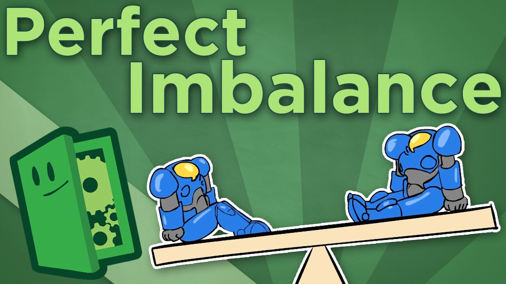
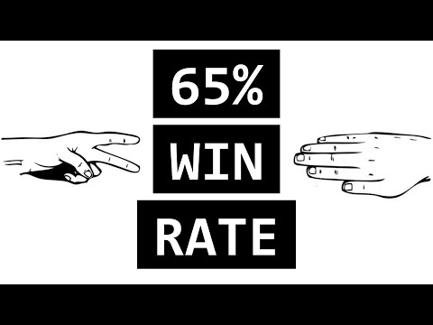
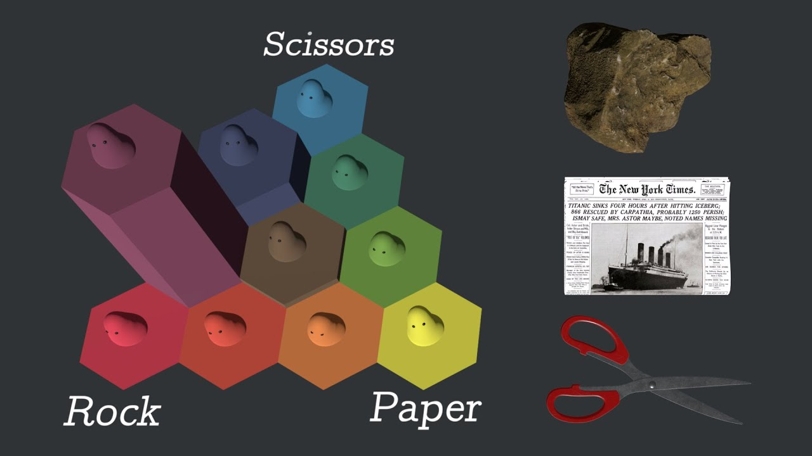

Módulo 02 / Apartado 4 de 5
El metajuego
Lo que no está en el temario y explica por qué la estrategia que funcionó hace tres años hoy no funciona.
Esto no está en la guía docente
Le dedica dos turras seguidas, y explica algo que las tres escuelas de arriba dan por supuesto sin decirlo: que tu estrategia no se juega contra el problema, se juega contra lo que están haciendo los demás. Y eso cambia mientras tú piensas.
La palabra viene de los videojuegos y del ajedrez competitivo. El juego son las reglas: qué puedes hacer y qué no. El metajuego es el juego que se monta encima, y consiste en lo que la gente está jugando de hecho en este momento.
Las reglas no cambian. El metajuego cambia cada temporada. Y una jugada que era buenísima el mes pasado puede ser mala hoy sin que nadie haya tocado nada, solo porque ahora todo el mundo sabe defenderla.
El ejemplo mínimo: piedra, papel o tijera
Es el juego más sencillo que tiene metajuego, y por eso vale para explicarlo entero.
En la turra enlaza un vídeo sobre John Nash, el matemático de Una mente maravillosa. Su aportación, muy resumida: en un juego con varios jugadores hay combinaciones de jugadas en las que a nadie le compensa cambiar por su cuenta, dado lo que hacen los demás. A eso se le llama equilibrio de Nash.
En piedra, papel o tijera el equilibrio es jugar al azar un tercio de las veces cada cosa. Y fíjate en lo que eso significa: la jugada óptima es no tener preferencia. Cualquier patrón que adoptes es explotable por alguien que lo detecte.
El desequilibrio perfecto
Aquí está la parte contraintuitiva, y viene de un vídeo sobre diseño de videojuegos que él enlaza. La pregunta es: ¿cuál es el mejor equilibrio para un juego competitivo?
La respuesta obvia sería que todas las opciones valgan lo mismo. Y es la peor. Si todo está perfectamente equilibrado, da igual lo que elijas, no hay nada que descubrir, y el juego se estanca en una fórmula que se repite.
Lo que produce partidas vivas es el desequilibrio deliberado: que algunas opciones sean mejores que otras ahora mismo. Eso obliga a la gente a estudiar el metajuego, a adaptarse, y a que la ventaja rote. El juego se mantiene vivo porque nunca terminas de resolverlo.
Traducción a negocio. Un mercado perfectamente equilibrado, donde todos los competidores ofrecen lo mismo al mismo precio, es un mercado muerto en el que solo se compite por coste. Los mercados donde se puede ganar son los que están desequilibrados, y la habilidad consiste en ver hacia dónde se está inclinando el desequilibrio antes que los demás. Que es, otra vez, lo del módulo 1 sobre leer señales.
Y por qué la velocidad no importa
El tercer vídeo que enlaza va de Age of Empires, y su tesis es que la velocidad de manos, las acciones por minuto, importan mucho menos de lo que la gente cree. Lo que separa a un jugador bueno de uno normal son las decisiones: qué construir, cuándo atacar, qué información tiene del rival.
La traducción es directa y bastante incómoda para muchas empresas: ejecutar más rápido no compensa decidir mal. Puedes duplicar tu velocidad de ejecución y, si estás jugando la jugada equivocada para el metajuego que hay, solo llegarás antes al sitio equivocado.
Lo que esto le hace a las tres escuelas
Es el aviso que faltaba, y va sobre las tres a la vez.
- El chispazo de de Bono puede darte una idea genial que ya se le ocurrió a otro hace dos años y que el mercado ya sabe defender.
- La solución intentada de Nardone puede no ser tuya, sino de todo tu sector a la vez. Y entonces bloquearla tú solo te deja fuera del consenso.
- El diagnóstico de Rumelt caduca. Un obstáculo bien identificado hace tres años puede haber dejado de ser el crux.
Por eso el metajuego no es un apartado suelto de curiosidades. Es el recordatorio de que cualquiera de las tres escuelas te da una foto, y el tablero es una película.
Fuentes de este apartado
Las turras de las que sale
La primera parte, y la que trae casi todo el material: piedra, papel y tijera, el desequilibrio perfecto, Nash y Age of Empires. Es de las turras más divertidas del corpus porque casi todos los ejemplos son de juegos.
El metajuego y su impacto en la estrategia (2 de 2)Turra · sin tarjeta en el repoLa segunda parte, más breve, con ejemplos de deporte de combate. La idea que la recorre: el golpe que no ve venir el rival no es el más fuerte, es el que no está en su modelo de lo que vas a hacer.
Los libros
 The Strategy ParadoxMichael E. Raynor · 2007
The Strategy ParadoxMichael E. Raynor · 2007El libro que le pone nombre académico a este apartado. Su tesis: las estrategias que más éxito tienen y las que fracasan más estrepitosamente son las mismas, porque las dos exigen comprometerse a fondo con una apuesta sobre el futuro. Lo que separa a unas de otras no es la calidad del análisis: es que el tablero se moviera a su favor o en contra. Su propuesta —separar el compromiso de la exploración por niveles de la organización— es discutible, y el diagnóstico es difícil de rebatir.
 Thinking in Systems: A PrimerDonella Meadows · 2008
Thinking in Systems: A PrimerDonella Meadows · 2008Aquí por una razón concreta: un metajuego es un sistema con bucles de realimentación, y este es el libro que enseña a leerlos. Ya salió en el módulo 1 con los doce puntos de apalancamiento; se anota otra vez porque la rotación piedra-papel-tijera de arriba es, literalmente, un bucle de equilibrio con retardo, y con el vocabulario de Meadows se ve al instante.
Para ver

Perfect Imbalance: por qué el desequilibrio produce partidas equilibradasExtra Credits · unos 7 minEl vídeo clave del apartado. Explica por qué un juego perfectamente equilibrado se estanca y uno desequilibrado a propósito se mantiene vivo. Se ve en un rato y la idea se traslada entera a mercados.
Por qué la velocidad no importa en Age of Empires 2Análisis de juego competitivoDesmonta la idea de que ganar depende de las acciones por minuto. Lo que decide son las decisiones y la información. La traducción a empresa es que ejecutar más rápido no compensa decidir mal.

La estrategia que rompe el piedra, papel o tijeraDivulgación · cortoCómo se puede ganar por encima del azar contra humanos, explotando que las personas no somos capaces de ser aleatorias. Es la demostración práctica de que cualquier patrón es explotable.

Simulando la evolución del piedra, papel o tijeraSimulación · cortoUna simulación de poblaciones jugando entre ellas donde se ve la rotación del metajuego en directo: una estrategia domina, se extiende, y su propia extensión la vuelve perdedora.